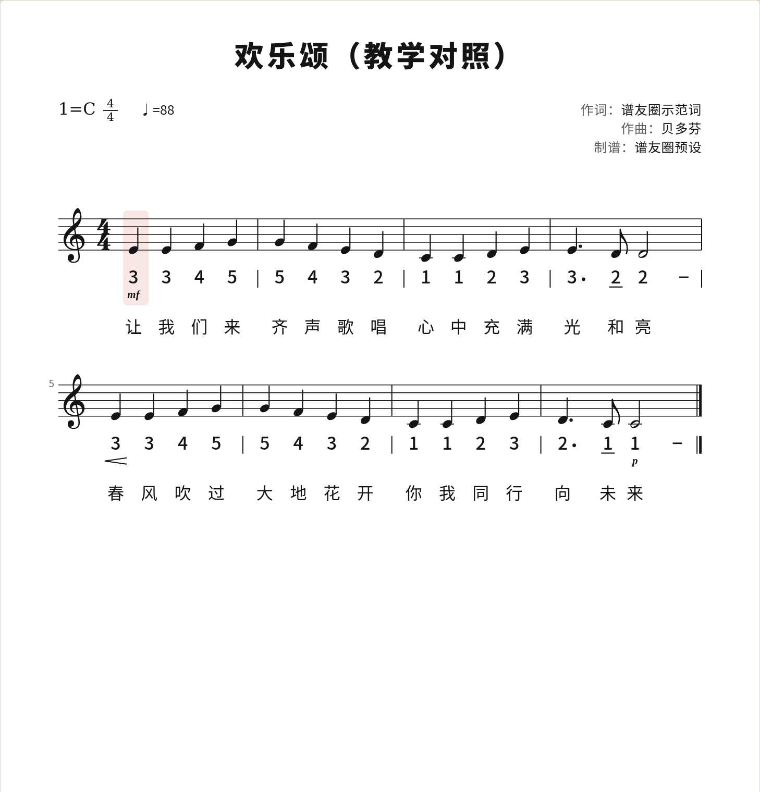

谱友圈
欢乐颂（教学对照）
送别
文件
输出
曲谱库
已入库 · 已同步
发布
李
音高
C
D
E
F
G
A
B
♯
♭
♮
时值
𝅝
𝅗𝅥
♩
♪
𝅘𝅥𝅯
·
—
0
编辑
节奏
记号
−
100%
+

已删除第 3 小节第 2 个音
撤销
▶ 播放
1
2
3
4
5
6
7
8
♩=88
1×
简谱·旋律1
第 3 / 8 小节
第 2 列
四分
1=C · 4/4
所有小节时值正确